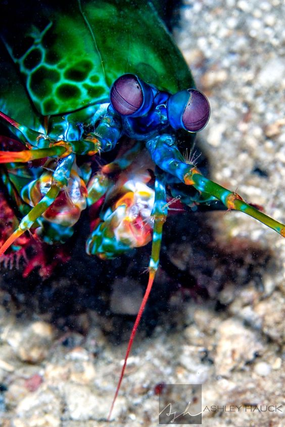
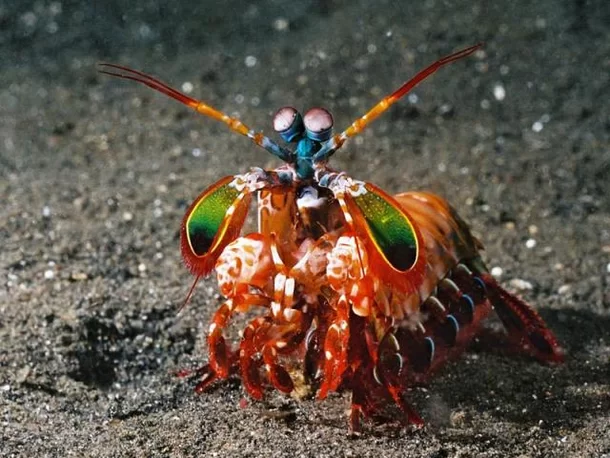
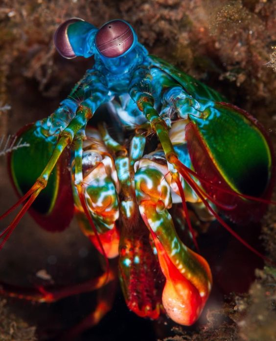

Fatos sobre o Stomatopoda
MANTIS: A LAGOSTA-BOXEADORA
Stomatopoda Odontodactylus scyllarus, chamados popularmente de tamarutacas ou de lacraias-do-mar no Brasil, é uma ordem de crustáceos marinhos da subclasse Hoplocarida, que agrupa cerca de 400 espécies, caracterizadas principalmente pela morfologia da segunda pata torácica, que é modificada em apêndice subquelado, lembrando uma pata de louva-a-deus.
- Reino: Animalia
- Filo: Arthropoda
- Subfilo: Crustacea
- Classe: Malacostraca
- Subclasse: Hoplocarida
- Ordem: Stomatopoda
Golpe ninja
Essas patinhas se movem tão depressa que a água próxima a elas chega a ferver — em um fenômeno chamado supercavitação —, além de provocar uma onda de choque capaz de matar a presa mesmo que a lagosta erre o golpe. Assim, com esse movimento ninja, as tamarutacas assassinam outros animais, despedaçando os coitados, mesmo que contem com carapaças protetoras.
Elas possuem duas patas superpoderosas na parte dianteira que, quando acionadas, são capazes de proferir um golpe com a mesma aceleração de um disparo de uma arma do calibre 22 aproximadamente (80km/h) e força de impacto de 60 kg/cm3! E isso em menos de 1/3.000 de segundo, o que significa que, se um humano pudesse acelerar os braços com 1/10 desse poder, seria possível lançar uma bola de baseball em órbita ao redor da Terra.
Pesadelo dos mares
As lagostas-boxeadoras costumam ser encontradas próximo à costa de mares tropicais e subtropicais e são predadoras letais que se alimentam de caranguejos, camarões, moluscos e peixes. Na verdade, apesar de não serem muito grandes — entre 15 e 30 centímetros —, as tamarutacas são um verdadeiro pesadelo dos oceanos, sendo consideradas como um dos animais mais violentos do planeta.
Fontes
https://pt.wikipedia.org/wiki/Stomatopoda">https://pt.wikipedia.org/wiki/Stomatopoda
https://www.megacurioso.com.br/animais-sinistros/36141-mantis-conheca-a-lagosta-boxeadora-o-bicho-mais-desgracado-dos-mares-.htm">https://www.megacurioso.com.br/animais-sinistros/36141-mantis-conheca-a-lagosta-boxeadora-o-bicho-mais-desgracado-dos-mares-.htm
"https://www.pinterest.es/search/pins/?q=Stomatopoda&rs=typed&term_meta[]=Stomatopoda%7Ctyped">https://www.pinterest.es/search/pins/?q=Stomatopoda&rs=typed&term_meta[]=Stomatopoda%7Ctyped